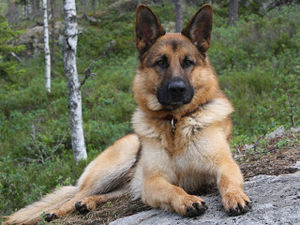

German Shepherd
A German Shepherd’s bite has 238 pounds of force.
- Scientific Name: Canis lupus familiaris
- Average height: 24–26 inches
- Average Lifespan: 9 – 13 years
- Habitat: Around Residents
The German Shepherd is a breed of medium to large-sized working dog that originated in Germany. The breed's officially recognized name is German Shepherd Dog in the English language, sometimes abbreviated as GSD and was also formerly known as the Alsatian in Britain.